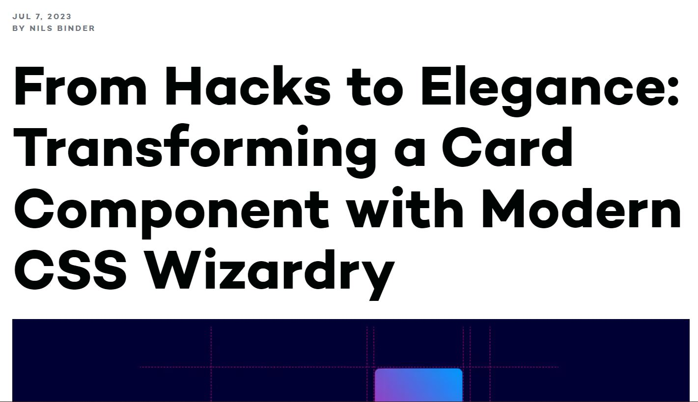

Web Design Research
As shown in class, I read the sidebar.io article on scroll driven animations in CSS. I chose this article because the first thing that came up to mind was the scrolling animations found on the home page of Apple’s website and was curious of what CSS would offer as an alternative to the JavaScript that Apple uses. This piqued my interest even further due to how much I’ve enjoyed prototyping and designing for browsers, and being able to unlock another step of animating a design is exciting. 
Upon reading the article, I discovered how many options this unlocked, especially with the given examples. As someone who is very visual and is inspired by visuals and can see ideas vividly, the examples allowed me to understand the types of designs that are able to be made with this unlocked aspect of CSS. The article was well laid out, with examples that were not terribly confusing even to my limited knowledge of html and CSS. The examples were very eye catching and realistic, as they seemed they could be real instances of scroll driven animations.
Another article given by sidebar.io was one on a process of transforming a card element with CSS. This article was interesting to read as it showed the process of using CSS to create a functional element, in this case a card system. It is very interesting and informative to see the process of making a functional design. I found it interesting that they showed failed designs and their decision-making process. The process shows off modern CSS tools such as sub grid and cascade layers and shows the possibilities of those features well.